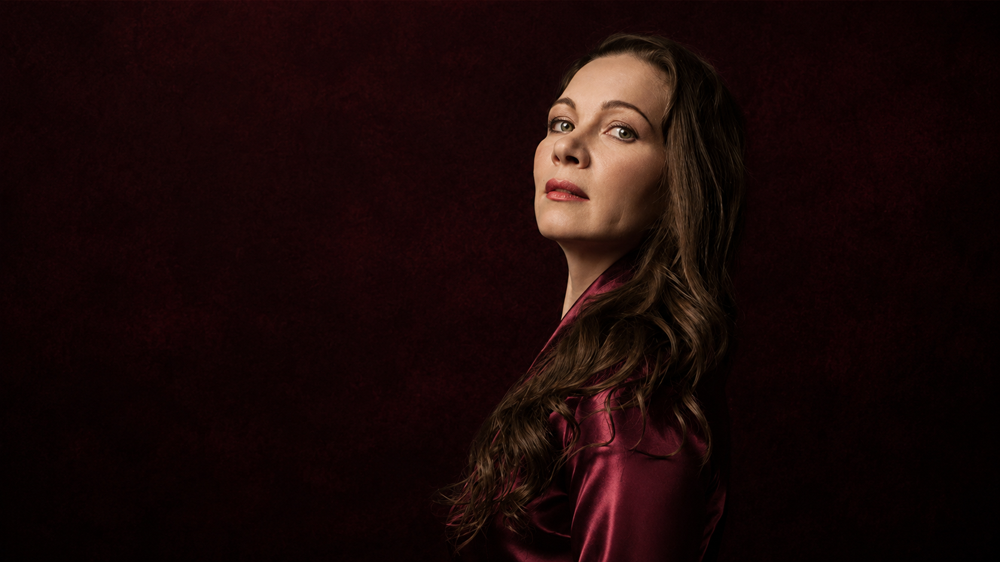
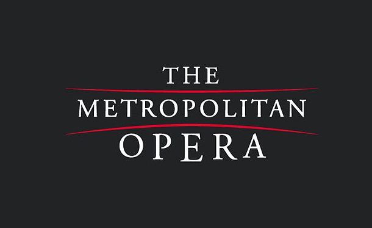

Видео · Direct video
Ксения Мусланова Князь Игорь Бородин
Borodin: Prince Igor — title role / aria excerpt
Смотреть ↗
Project card
15 · 2017
Prince Igor - Borodin
Prince Igor / возможный status unclear
Dutch National Opera, Amsterdam, Netherlands. Feb-Mar 2017
Stanislav Kochanovsky (по открытым рецензиям на DNO 2017)
Dmitri Tcherniakov
Choreography: Itzik Galili; details require DNO archive.
К проверке. Биографические источники упоминают Amsterdam/Prince Igor, но открытая карточка DNO/пресса показывает Ildar Abdrazakov; возможен cover/alternate. Не ставить как подтвержденное публичное выступление без архива DNO/Operabase Pro.
Материалы собраны прямо внутри карточки проекта: локальные PDF/HTML из пресс-клиппинга и видео по роли или постановке.
Borodin: Prince Igor — title role / aria excerpt
Смотреть ↗
Channel with older aria clips
Смотреть ↗Unclear / likely homonym or non-artist
Смотреть ↗